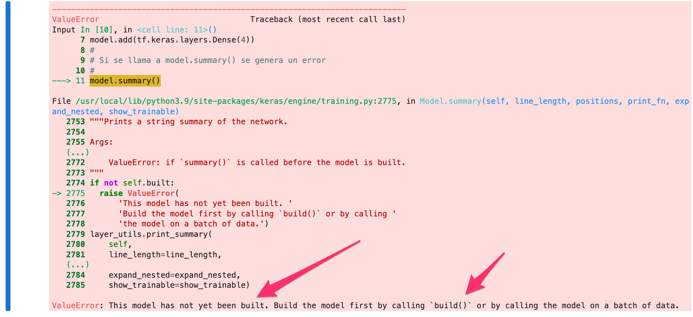

Creación de modelos usando Sequential — 0:00 min
Última modificación: Marzo 7, 2022 | YouTube
Adaptado de: https://keras.io/api/models/sequential/
Importación de librerías
[1]:
import os
os.environ["TF_CPP_MIN_LOG_LEVEL"] = "2"
import tensorflow as tf
tf.__version__
[1]:
'2.8.0'
Sequential
Crea un tf.keras.Model como una secuencia lineal de capas.
[2]:
#
# Creación de capas indicando las dimensiones de la capa de entrada
# con input_shape()
#
model = tf.keras.Sequential()
model.add(tf.keras.layers.Dense(8, input_shape=(16,)))
model.add(tf.keras.layers.Dense(4))
model.summary()
Model: "sequential"
_________________________________________________________________
Layer (type) Output Shape Param #
=================================================================
dense (Dense) (None, 8) 136
dense_1 (Dense) (None, 4) 36
=================================================================
Total params: 172
Trainable params: 172
Non-trainable params: 0
_________________________________________________________________
[3]:
tf.keras.utils.plot_model(model, show_shapes=True)
[3]:

[4]:
#
# Pesos asociados a las capas del modelo
#
model.weights
[4]:
[<tf.Variable 'dense/kernel:0' shape=(16, 8) dtype=float32, numpy=
array([[ 0.21297538, -0.06917584, 0.49518156, 0.16121781, -0.301906 ,
-0.16776037, -0.02052736, 0.24758387],
[-0.45558465, 0.12556005, 0.14351773, -0.46169877, -0.10797024,
0.10134923, 0.05321169, -0.47283244],
[ 0.3502996 , 0.27313387, 0.08184409, 0.32102013, -0.4839846 ,
0.3878678 , 0.0789268 , 0.19108367],
[-0.32651258, 0.22070694, -0.2904836 , -0.48260987, -0.3180486 ,
0.48315907, -0.09891117, -0.42583823],
[-0.14858425, -0.07843637, -0.15283501, 0.15224314, -0.0353502 ,
-0.49160874, 0.14190066, 0.05476511],
[-0.03854203, 0.07533491, -0.28070855, -0.45603824, -0.27134466,
0.2718451 , 0.44840956, -0.03171229],
[-0.41868627, -0.46338952, -0.07317257, -0.284297 , 0.1455462 ,
-0.2148161 , -0.27619612, -0.25541437],
[ 0.2663293 , -0.2722702 , -0.27412713, -0.1529876 , -0.42223954,
-0.10641456, 0.08139181, 0.3682996 ],
[-0.0111388 , 0.3218484 , 0.16795254, -0.22280836, -0.32464254,
-0.05370402, 0.14374328, 0.4525242 ],
[-0.4282062 , 0.2567408 , 0.0369662 , -0.31314242, 0.35518026,
0.48029613, 0.42778862, -0.2740438 ],
[-0.3457483 , 0.06380832, -0.41216886, 0.10807312, 0.20615745,
-0.21810842, 0.01687229, 0.26503134],
[ 0.00611365, 0.05814838, -0.16269195, 0.03690517, -0.0412401 ,
0.35296023, -0.22702229, -0.47742593],
[ 0.04266357, 0.4422468 , 0.28150463, -0.35075927, -0.15711617,
0.41937745, -0.14635694, 0.4881227 ],
[-0.03082943, 0.3313061 , -0.29015768, 0.03098536, -0.14286733,
-0.0736258 , -0.4394666 , -0.0096544 ],
[ 0.04987383, 0.08771849, 0.4303341 , -0.19876575, 0.03140569,
-0.22887194, 0.10194957, 0.41488695],
[ 0.30606747, -0.3171153 , 0.3803438 , 0.04581857, 0.46335053,
0.24757028, -0.3398826 , -0.15584373]], dtype=float32)>,
<tf.Variable 'dense/bias:0' shape=(8,) dtype=float32, numpy=array([0., 0., 0., 0., 0., 0., 0., 0.], dtype=float32)>,
<tf.Variable 'dense_1/kernel:0' shape=(8, 4) dtype=float32, numpy=
array([[ 0.45199913, -0.5480763 , -0.05654287, 0.14014417],
[ 0.44879705, 0.4007221 , 0.54268366, -0.54463875],
[-0.14278746, -0.5550445 , 0.607341 , 0.5553623 ],
[ 0.587218 , -0.6415607 , -0.24121603, -0.12298363],
[ 0.6253076 , -0.149625 , -0.46702838, -0.22117436],
[ 0.0188604 , -0.01484126, 0.3975566 , 0.5914939 ],
[ 0.13159525, 0.37202007, -0.14832675, 0.60973877],
[ 0.36837107, -0.6591993 , -0.60161036, 0.56869394]],
dtype=float32)>,
<tf.Variable 'dense_1/bias:0' shape=(4,) dtype=float32, numpy=array([0., 0., 0., 0.], dtype=float32)>]
[5]:
#
# Creación del modelo como una lista de capas indicando las dimensiones de la
# capa de entrada con input_shape
#
model = tf.keras.Sequential(
[
tf.keras.layers.Dense(8, input_shape=(16,)),
tf.keras.layers.Dense(4),
]
)
model.summary()
Model: "sequential_1"
_________________________________________________________________
Layer (type) Output Shape Param #
=================================================================
dense_2 (Dense) (None, 8) 136
dense_3 (Dense) (None, 4) 36
=================================================================
Total params: 172
Trainable params: 172
Non-trainable params: 0
_________________________________________________________________
[6]:
#
# Especificación de una capa de entrada con tf.keras.Input()
#
model = tf.keras.Sequential()
model.add(tf.keras.Input(shape=(16,)))
model.add(tf.keras.layers.Dense(8))
model.summary()
Model: "sequential_2"
_________________________________________________________________
Layer (type) Output Shape Param #
=================================================================
dense_4 (Dense) (None, 8) 136
=================================================================
Total params: 136
Trainable params: 136
Non-trainable params: 0
_________________________________________________________________
[7]:
#
# En el siguiente código no se especifica las dimensiones de la entrada. El
# modelo no tiene pesos hasta que se haga una llamada a training/evaluation
#
model = tf.keras.Sequential()
model.add(tf.keras.layers.Dense(8))
model.add(tf.keras.layers.Dense(4))
#
# Si se llama a model.summary() se genera un error
#

[8]:
#
# Si se especifica input_shape, el modleo es construído a medida que se van
# adicionando capas
#
model = tf.keras.Sequential()
model.add(
tf.keras.layers.Dense(8, input_shape=(16,)),
)
model.add(tf.keras.layers.Dense(4))
len(model.weights)
[8]:
4
[9]:
#
# Cuando el modelo usa construcción pospuesta, es decir, no se especifican las
# dimensiones de la entrada, este pueden ser construido manualmente con build.
#
# `build(batch_input_shape)`
#
model = tf.keras.Sequential()
model.add(tf.keras.layers.Dense(8))
model.add(tf.keras.layers.Dense(4))
model.build((None, 16))
len(model.weights)
[9]:
4
[10]:
#
# Cuando el modelo usa construcción pospuesta, es decir, no se especifican las
# dimensiones de la entrada, el modelo es construido internamente cuando se
# llama por primera vez a `fit`, `eval` o `predict`.
#
model = tf.keras.Sequential()
model.add(tf.keras.layers.Dense(8))
model.add(tf.keras.layers.Dense(1))
model.predict(
tf.constant(
[
[1, 1, 1],
[2, 2, 2],
]
)
)
[10]:
array([[-0.07940249],
[-0.15880498]], dtype=float32)
[11]:
model.summary()
Model: "sequential_6"
_________________________________________________________________
Layer (type) Output Shape Param #
=================================================================
dense_11 (Dense) (None, 8) 32
dense_12 (Dense) (None, 1) 9
=================================================================
Total params: 41
Trainable params: 41
Non-trainable params: 0
_________________________________________________________________
[12]:
#
# Las capas también pueden ser eliminadas usando `pop()``
#
model.pop()
model.summary()
Model: "sequential_6"
_________________________________________________________________
Layer (type) Output Shape Param #
=================================================================
dense_11 (Dense) (None, 8) 32
=================================================================
Total params: 32
Trainable params: 32
Non-trainable params: 0
_________________________________________________________________